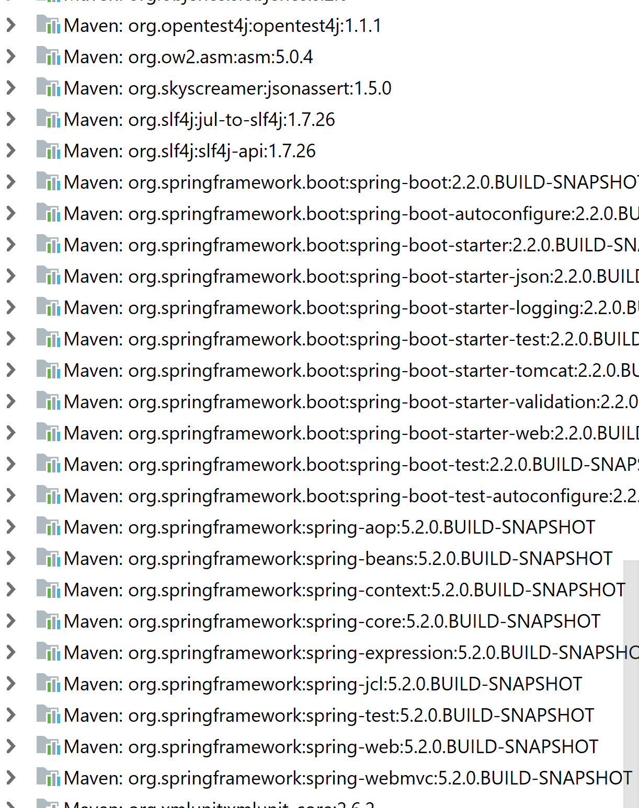

<!DOCTYPE html>
<html>
<head><meta name="generator" content="Hexo 3.8.0">
  <!-- hexo-inject:begin --><!-- hexo-inject:end --><meta charset="utf-8">
  

  
  <title>Spring Boot Introduction | TongTong Shi&#39;s Blog</title>
  <meta name="viewport" content="width=device-width, initial-scale=1, maximum-scale=1">
  <meta name="description" content="Today world moves toward Micro Services. Instead of developing large monolithic applications, we are building lots of Micro Services. One of the important things with these Micro Services is you would">
<meta name="keywords" content="Spring Boot">
<meta property="og:type" content="article">
<meta property="og:title" content="Spring Boot Introduction">
<meta property="og:url" content="http://yoursite.com/2019/06/12/springboot-introduction/index.html">
<meta property="og:site_name" content="TongTong Shi&#39;s Blog">
<meta property="og:description" content="Today world moves toward Micro Services. Instead of developing large monolithic applications, we are building lots of Micro Services. One of the important things with these Micro Services is you would">
<meta property="og:locale" content="default">
<meta property="og:image" content="http://yoursite.com/2019/06/12/springboot-introduction/springboot.png">
<meta property="og:updated_time" content="2019-06-12T23:11:46.443Z">
<meta name="twitter:card" content="summary">
<meta name="twitter:title" content="Spring Boot Introduction">
<meta name="twitter:description" content="Today world moves toward Micro Services. Instead of developing large monolithic applications, we are building lots of Micro Services. One of the important things with these Micro Services is you would">
<meta name="twitter:image" content="http://yoursite.com/2019/06/12/springboot-introduction/springboot.png">
  
    <link rel="alternate" href="/atom.xml" title="TongTong Shi&#39;s Blog" type="application/atom+xml">
  
  
    <link rel="icon" href="/favicon.png">
  
  
    <link href="//fonts.googleapis.com/css?family=Source+Code+Pro" rel="stylesheet" type="text/css">
  
  <link rel="stylesheet" href="/css/style.css"><!-- hexo-inject:begin --><!-- hexo-inject:end -->
</head>
</html>
<body>
  <!-- hexo-inject:begin --><!-- hexo-inject:end --><div id="container">
    <div id="wrap">
      <header id="header">
  <div id="banner"></div>
  <div id="header-outer" class="outer">
    <div id="header-title" class="inner">
      <h1 id="logo-wrap">
        <a href="/" id="logo">TongTong Shi&#39;s Blog</a>
      </h1>
      
    </div>
    <div id="header-inner" class="inner">
      <nav id="main-nav">
        <a id="main-nav-toggle" class="nav-icon"></a>
        
          <a class="main-nav-link" href="/">Home</a>
        
          <a class="main-nav-link" href="/archives">Archives</a>
        
      </nav>
      <nav id="sub-nav">
        
          <a id="nav-rss-link" class="nav-icon" href="/atom.xml" title="RSS Feed"></a>
        
        <a id="nav-search-btn" class="nav-icon" title="Search"></a>
      </nav>
      <div id="search-form-wrap">
        <form action="//google.com/search" method="get" accept-charset="UTF-8" class="search-form"><input type="search" name="q" class="search-form-input" placeholder="Search"><button type="submit" class="search-form-submit">&#xF002;</button><input type="hidden" name="sitesearch" value="http://yoursite.com"></form>
      </div>
    </div>
  </div>
</header>
      <div class="outer">
        <section id="main"><article id="post-springboot-introduction" class="article article-type-post" itemscope itemprop="blogPost">
  <div class="article-meta">
    <a href="/2019/06/12/springboot-introduction/" class="article-date">
  <time datetime="2019-06-12T15:18:50.000Z" itemprop="datePublished">2019-06-12</time>
</a>
    
  </div>
  <div class="article-inner">
    
    
      <header class="article-header">
        
  
    <h1 class="article-title" itemprop="name">
      Spring Boot Introduction
    </h1>
  

      </header>
    
    <div class="article-entry" itemprop="articleBody">
      
        <p>Today world moves toward <em>Micro Services</em>. Instead of developing large monolithic applications, we are building lots of <em>Micro Services</em>. One of the important things with these <em>Micro Services</em> is you would want to be able to build them quickly. That’s where <em>Spring Boot</em> comes in. Next, let’s first discuss about the goals an the important features of <em>Spring Boot</em>.</p>
<a id="more"></a>
<h3 id="font-colordodgerblue1-goals-and-important-featuresfont"><a class="markdownIt-Anchor" href="#font-colordodgerblue1-goals-and-important-featuresfont"></a> <font color="dodgerblue">1. Goals and important features</font></h3>
<p><font color="#7DCEA0"><strong>Two Goals</strong></font><br>
The most important goal of <em>Spring Boot</em> is to enable building production ready applictions quickly. Another important goal is to provide all the common non-functional features, e.g. embedded servers, metrics, health checks and externalized configuration.</p>
<p><font color="#7DCEA0"><strong>What Spring Boot is Not !</strong></font></p>
<ul>
<li><strong>Zero code generation</strong>.There is no code generation at all!</li>
<li><strong>Neither an application server nor a web server</strong>.Spring boot is neither an application server nor a web server. Spring boot provides great integreation with embedded servers like Tomcat, Jetty but by itself Spring Boot is not a web server and it’s not an application server.</li>
</ul>
<p><font color="#7DCEA0"><strong>Features</strong></font></p>
<ul>
<li><strong>Quick starter projects with auto configuration</strong>
<ul>
<li><strong>Web</strong>. For example, if I’m using <em>Spring MVC</em>, I would configure dispatcher servlet. I would need to configure view resolver and a lot of things like that. However, with <em>Spring Boot Starter project</em> it becomes very easy. All that you need to do is to add a starter called <em>Spring starter web</em> into your project and that’s it. You’ll get to <em>Spring MVC</em> for free. You’ll get to <em>Spring core</em> for free. You get a <em>validation framework</em> for free and also a <em>logging framework</em> for free.</li>
<li><strong>JPA</strong>. Similarly, for <em>JPA</em> there is a starter called <em>Spring Boot starter JPA</em>. Once we use that starter. You would not only get JPA but also a default implementation of JPA with Hibernate and also auto configuration of that.</li>
</ul>
</li>
<li><strong>Embedded Servers - Tomcal, Jetty or Undertow</strong>. Previously, we would need to install a web server and then I would take my application war and deploy it. This is the ususal way we use to deploy stuff. With <em>Spring Boot</em>, comes a concept called <em>embedded server</em>. What you can do is you can package your server, you can package <em>Tomcat</em> along with your application jar. So I don’t need to install it. In the world of <em>Micro Services</em>, this makes a huge difference.</li>
<li><strong>Production-ready features</strong>
<ul>
<li><strong>metrics, health checks</strong>. <em>Spring boot</em> provides monitoring for your application through something called <em>Spring actuator</em>. For example, you can find out how many times a particular service is called or failed and also you can check whether the application is up and running or not. All these freatures come built in.</li>
<li><strong>externalized configuration.</strong> The configuration of applications varies between different environments. The configuration from <em>dev</em> different from the configuration <em>in production</em>. <em>Spring boot</em> provides these features built in. You can simply create property files matching a simple naming convention and that’s it.</li>
</ul>
</li>
</ul>
<h3 id="font-colordodgerblue2-developing-spring-applications-before-spring-bootfont"><a class="markdownIt-Anchor" href="#font-colordodgerblue2-developing-spring-applications-before-spring-bootfont"></a> <font color="dodgerblue">2. Developing Spring Applications before Spring Boot</font></h3>
<p>To build a <em>Spring MVC</em> project, we need to decide what dependencies to add into our project as well as their comparable version.<br>
We need to implement default exception handling. And we need a complete Spring configuration file. We needed to define the component scan and then we would need to configure a view resolver to redirect the views to <em>JSP</em>.<br>
And in addition to that we needed to configure our <code>web.xml</code> as well. We needed ot configure the dispatcher servlet in <code>web.xml</code> so that it can handle all the requests and act as a front controller. We needed to configure the context configuration location, spring security as well as the filter for it to make sure that it intercepts all the request.<br>
All these stuff we don’t need to do with Spring Boot. Spring Boot would automatically provide all that stuff. These stuff would be replaced by a simple starter project called <em>Spring Boot startup web</em> in combination with <em>Spring Boot starter security</em>.</p>
<h3 id="font-colordodgerblue3-using-spring-initializer-to-create-a-spring-boot-applicationfont"><a class="markdownIt-Anchor" href="#font-colordodgerblue3-using-spring-initializer-to-create-a-spring-boot-applicationfont"></a> <font color="dodgerblue">3. Using Spring Initializer to Create a Spring Boot Application</font></h3>
<ul>
<li>go to <code>start.spring.io</code> and generate a <code>maven project</code> with <code>java</code> and spring boot <code>2.2.0 SNAPSHot</code>.Give <code>Group Id</code> and <code>Artifact Id</code>. Add dependencies, including <code>Spring Web Starter</code>, <code>JPA</code>, <code>Security</code>, <code>Dev</code>,…</li>
<li>import the project in IDE.</li>
</ul>
<h3 id="font-colordodgerblue4-creating-a-simple-restful-controllerfont"><a class="markdownIt-Anchor" href="#font-colordodgerblue4-creating-a-simple-restful-controllerfont"></a> <font color="dodgerblue">4. Creating a Simple RESTful Controller</font></h3>
<h3 id="font-colordodgerblue5-what-is-spring-boot-auto-configurationfont"><a class="markdownIt-Anchor" href="#font-colordodgerblue5-what-is-spring-boot-auto-configurationfont"></a> <font color="dodgerblue">5. What is Spring Boot Auto COnfiguration?</font></h3>
<p>First, let’s look at file <code>SpringBootDemoAPpplication.java</code>. That is,</p>
<figure class="highlight groovy"><figcaption><span>lang: java</span></figcaption><table><tr><td class="gutter"><pre><span class="line">1</span><br><span class="line">2</span><br><span class="line">3</span><br><span class="line">4</span><br><span class="line">5</span><br><span class="line">6</span><br><span class="line">7</span><br><span class="line">8</span><br><span class="line">9</span><br><span class="line">10</span><br><span class="line">11</span><br></pre></td><td class="code"><pre><span class="line"><span class="keyword">package</span> com.example.springbootdemo;</span><br><span class="line"></span><br><span class="line"><span class="keyword">import</span> org.springframework.boot.SpringApplication;</span><br><span class="line"><span class="keyword">import</span> org.springframework.boot.autoconfigure.SpringBootApplication;</span><br><span class="line"></span><br><span class="line"><span class="meta">@SpringBootApplication</span></span><br><span class="line"><span class="keyword">public</span> <span class="class"><span class="keyword">class</span> <span class="title">SpringBootDemoApplication</span> &#123;</span></span><br><span class="line">  <span class="keyword">public</span> <span class="keyword">static</span> <span class="keyword">void</span> main(String[] args) &#123;</span><br><span class="line">    SpringApplication.run(SpringBootDemoApplication.<span class="keyword">class</span>, args);</span><br><span class="line">  &#125;</span><br><span class="line">&#125;</span><br></pre></td></tr></table></figure>
<p>The annotation <code>@SpringBootApplication</code> does several things.</p>
<ul>
<li>One, it indicates that this is a <strong>Spring context file</strong>.</li>
<li>Two, it enables someting called <strong>auto configuration</strong>.</li>
<li>Three, it enables something called <strong>component scan</strong>.</li>
</ul>
<p><strong>Component scan</strong> is one of the important features of Spring where it would start automatically scanning the classes in package <code>com.example.springbootdemo</code>. And its sub package for any beans.<br>
Since we have added an annotation <code>@RestController</code> above <code>BooksController</code>. So <code>BooksController</code> would be registered as a bean and it would be managed by the Spring framework.</p>
<p>Next, let’s look at auto configuration in depth. Method <code>SpringApplication.run()</code> is used to run a Spring context. So I’m giving a Spring context as an input to it and it would be able to run that. The run method also return somethong. It returns the application context back. For example,</p>
<figure class="highlight arduino"><figcaption><span>lang: java</span></figcaption><table><tr><td class="gutter"><pre><span class="line">1</span><br><span class="line">2</span><br><span class="line">3</span><br><span class="line">4</span><br><span class="line">5</span><br><span class="line">6</span><br><span class="line">7</span><br></pre></td><td class="code"><pre><span class="line"><span class="keyword">public</span> <span class="keyword">static</span> <span class="keyword">void</span> main(<span class="keyword">String</span>[] args) &#123;</span><br><span class="line">  ApplicationContext applicationContext = SpringApplication.<span class="built_in">run</span>(SpringBootDemoApplication.class, args);</span><br><span class="line"></span><br><span class="line">  <span class="built_in">for</span> (<span class="keyword">String</span> name: applicationContext.getBeanDefinitionNames()) &#123;</span><br><span class="line">    System.out.<span class="built_in">println</span>(name);</span><br><span class="line">  &#125;</span><br><span class="line">&#125;</span><br></pre></td></tr></table></figure>
<p>The output is:</p>
<details>
<summary>CLICK</summary>
<figure class="highlight stylus"><figcaption><span>lang: java</span></figcaption><table><tr><td class="gutter"><pre><span class="line">1</span><br><span class="line">2</span><br><span class="line">3</span><br><span class="line">4</span><br><span class="line">5</span><br><span class="line">6</span><br><span class="line">7</span><br><span class="line">8</span><br><span class="line">9</span><br><span class="line">10</span><br><span class="line">11</span><br><span class="line">12</span><br><span class="line">13</span><br><span class="line">14</span><br><span class="line">15</span><br><span class="line">16</span><br><span class="line">17</span><br><span class="line">18</span><br><span class="line">19</span><br><span class="line">20</span><br><span class="line">21</span><br><span class="line">22</span><br><span class="line">23</span><br><span class="line">24</span><br><span class="line">25</span><br><span class="line">26</span><br><span class="line">27</span><br><span class="line">28</span><br><span class="line">29</span><br><span class="line">30</span><br><span class="line">31</span><br><span class="line">32</span><br><span class="line">33</span><br><span class="line">34</span><br><span class="line">35</span><br><span class="line">36</span><br><span class="line">37</span><br><span class="line">38</span><br><span class="line">39</span><br><span class="line">40</span><br><span class="line">41</span><br><span class="line">42</span><br><span class="line">43</span><br><span class="line">44</span><br><span class="line">45</span><br><span class="line">46</span><br><span class="line">47</span><br><span class="line">48</span><br><span class="line">49</span><br><span class="line">50</span><br><span class="line">51</span><br><span class="line">52</span><br><span class="line">53</span><br><span class="line">54</span><br><span class="line">55</span><br><span class="line">56</span><br><span class="line">57</span><br><span class="line">58</span><br><span class="line">59</span><br><span class="line">60</span><br><span class="line">61</span><br><span class="line">62</span><br><span class="line">63</span><br><span class="line">64</span><br><span class="line">65</span><br><span class="line">66</span><br><span class="line">67</span><br><span class="line">68</span><br><span class="line">69</span><br><span class="line">70</span><br><span class="line">71</span><br><span class="line">72</span><br><span class="line">73</span><br><span class="line">74</span><br><span class="line">75</span><br><span class="line">76</span><br><span class="line">77</span><br><span class="line">78</span><br><span class="line">79</span><br><span class="line">80</span><br><span class="line">81</span><br><span class="line">82</span><br><span class="line">83</span><br><span class="line">84</span><br><span class="line">85</span><br><span class="line">86</span><br><span class="line">87</span><br><span class="line">88</span><br><span class="line">89</span><br><span class="line">90</span><br><span class="line">91</span><br><span class="line">92</span><br><span class="line">93</span><br><span class="line">94</span><br><span class="line">95</span><br><span class="line">96</span><br><span class="line">97</span><br><span class="line">98</span><br><span class="line">99</span><br><span class="line">100</span><br><span class="line">101</span><br><span class="line">102</span><br><span class="line">103</span><br><span class="line">104</span><br><span class="line">105</span><br><span class="line">106</span><br><span class="line">107</span><br><span class="line">108</span><br><span class="line">109</span><br><span class="line">110</span><br><span class="line">111</span><br><span class="line">112</span><br><span class="line">113</span><br><span class="line">114</span><br><span class="line">115</span><br><span class="line">116</span><br><span class="line">117</span><br><span class="line">118</span><br><span class="line">119</span><br><span class="line">120</span><br><span class="line">121</span><br><span class="line">122</span><br><span class="line">123</span><br></pre></td><td class="code"><pre><span class="line">org<span class="selector-class">.springframework</span><span class="selector-class">.context</span><span class="selector-class">.annotation</span><span class="selector-class">.internalConfigurationAnnotationProcessor</span></span><br><span class="line">org<span class="selector-class">.springframework</span><span class="selector-class">.context</span><span class="selector-class">.annotation</span><span class="selector-class">.internalAutowiredAnnotationProcessor</span></span><br><span class="line">org<span class="selector-class">.springframework</span><span class="selector-class">.context</span><span class="selector-class">.annotation</span><span class="selector-class">.internalCommonAnnotationProcessor</span></span><br><span class="line">org<span class="selector-class">.springframework</span><span class="selector-class">.context</span><span class="selector-class">.event</span><span class="selector-class">.internalEventListenerProcessor</span></span><br><span class="line">org<span class="selector-class">.springframework</span><span class="selector-class">.context</span><span class="selector-class">.event</span><span class="selector-class">.internalEventListenerFactory</span></span><br><span class="line">springBootDemoApplication</span><br><span class="line">org<span class="selector-class">.springframework</span><span class="selector-class">.boot</span><span class="selector-class">.autoconfigure</span><span class="selector-class">.internalCachingMetadataReaderFactory</span></span><br><span class="line">booksController</span><br><span class="line">org<span class="selector-class">.springframework</span><span class="selector-class">.boot</span><span class="selector-class">.autoconfigure</span><span class="selector-class">.AutoConfigurationPackages</span></span><br><span class="line">org<span class="selector-class">.springframework</span><span class="selector-class">.boot</span><span class="selector-class">.autoconfigure</span><span class="selector-class">.context</span><span class="selector-class">.PropertyPlaceholderAutoConfiguration</span></span><br><span class="line">org<span class="selector-class">.springframework</span><span class="selector-class">.boot</span><span class="selector-class">.autoconfigure</span><span class="selector-class">.condition</span><span class="selector-class">.BeanTypeRegistry</span></span><br><span class="line">propertySourcesPlaceholderConfigurer</span><br><span class="line">org<span class="selector-class">.springframework</span><span class="selector-class">.boot</span><span class="selector-class">.autoconfigure</span><span class="selector-class">.websocket</span><span class="selector-class">.servlet</span><span class="selector-class">.WebSocketServletAutoConfiguration</span><span class="variable">$TomcatWebSocketConfiguration</span></span><br><span class="line">websocketServletWebServerCustomizer</span><br><span class="line">org<span class="selector-class">.springframework</span><span class="selector-class">.boot</span><span class="selector-class">.autoconfigure</span><span class="selector-class">.websocket</span><span class="selector-class">.servlet</span><span class="selector-class">.WebSocketServletAutoConfiguration</span></span><br><span class="line">org<span class="selector-class">.springframework</span><span class="selector-class">.boot</span><span class="selector-class">.autoconfigure</span><span class="selector-class">.web</span><span class="selector-class">.servlet</span><span class="selector-class">.ServletWebServerFactoryConfiguration</span><span class="variable">$EmbeddedTomcat</span></span><br><span class="line">tomcatServletWebServerFactory</span><br><span class="line">org<span class="selector-class">.springframework</span><span class="selector-class">.boot</span><span class="selector-class">.autoconfigure</span><span class="selector-class">.web</span><span class="selector-class">.servlet</span><span class="selector-class">.ServletWebServerFactoryAutoConfiguration</span></span><br><span class="line">servletWebServerFactoryCustomizer</span><br><span class="line">tomcatServletWebServerFactoryCustomizer</span><br><span class="line">server-org<span class="selector-class">.springframework</span><span class="selector-class">.boot</span><span class="selector-class">.autoconfigure</span><span class="selector-class">.web</span><span class="selector-class">.ServerProperties</span></span><br><span class="line">org<span class="selector-class">.springframework</span><span class="selector-class">.boot</span><span class="selector-class">.context</span><span class="selector-class">.internalConfigurationPropertiesBinder</span></span><br><span class="line">org<span class="selector-class">.springframework</span><span class="selector-class">.boot</span><span class="selector-class">.context</span><span class="selector-class">.properties</span><span class="selector-class">.ConfigurationPropertiesBindingPostProcessor</span></span><br><span class="line">org<span class="selector-class">.springframework</span><span class="selector-class">.boot</span><span class="selector-class">.context</span><span class="selector-class">.properties</span><span class="selector-class">.ConfigurationBeanFactoryMetadata</span></span><br><span class="line">webServerFactoryCustomizerBeanPostProcessor</span><br><span class="line">errorPageRegistrarBeanPostProcessor</span><br><span class="line">org<span class="selector-class">.springframework</span><span class="selector-class">.boot</span><span class="selector-class">.autoconfigure</span><span class="selector-class">.web</span><span class="selector-class">.servlet</span><span class="selector-class">.DispatcherServletAutoConfiguration</span><span class="variable">$DispatcherServletConfiguration</span></span><br><span class="line">dispatcherServlet</span><br><span class="line">spring<span class="selector-class">.http-org</span><span class="selector-class">.springframework</span><span class="selector-class">.boot</span><span class="selector-class">.autoconfigure</span><span class="selector-class">.http</span><span class="selector-class">.HttpProperties</span></span><br><span class="line">spring<span class="selector-class">.mvc-org</span><span class="selector-class">.springframework</span><span class="selector-class">.boot</span><span class="selector-class">.autoconfigure</span><span class="selector-class">.web</span><span class="selector-class">.servlet</span><span class="selector-class">.WebMvcProperties</span></span><br><span class="line">org<span class="selector-class">.springframework</span><span class="selector-class">.boot</span><span class="selector-class">.autoconfigure</span><span class="selector-class">.web</span><span class="selector-class">.servlet</span><span class="selector-class">.DispatcherServletAutoConfiguration</span><span class="variable">$DispatcherServletRegistrationConfiguration</span></span><br><span class="line">dispatcherServletRegistration</span><br><span class="line">org<span class="selector-class">.springframework</span><span class="selector-class">.boot</span><span class="selector-class">.autoconfigure</span><span class="selector-class">.web</span><span class="selector-class">.servlet</span><span class="selector-class">.DispatcherServletAutoConfiguration</span></span><br><span class="line">org<span class="selector-class">.springframework</span><span class="selector-class">.boot</span><span class="selector-class">.autoconfigure</span><span class="selector-class">.task</span><span class="selector-class">.TaskExecutionAutoConfiguration</span></span><br><span class="line">taskExecutorBuilder</span><br><span class="line">applicationTaskExecutor</span><br><span class="line">spring<span class="selector-class">.task</span><span class="selector-class">.execution-org</span><span class="selector-class">.springframework</span><span class="selector-class">.boot</span><span class="selector-class">.autoconfigure</span><span class="selector-class">.task</span><span class="selector-class">.TaskExecutionProperties</span></span><br><span class="line">org<span class="selector-class">.springframework</span><span class="selector-class">.boot</span><span class="selector-class">.autoconfigure</span><span class="selector-class">.validation</span><span class="selector-class">.ValidationAutoConfiguration</span></span><br><span class="line">defaultValidator</span><br><span class="line">methodValidationPostProcessor</span><br><span class="line">org<span class="selector-class">.springframework</span><span class="selector-class">.boot</span><span class="selector-class">.autoconfigure</span><span class="selector-class">.web</span><span class="selector-class">.servlet</span><span class="selector-class">.error</span><span class="selector-class">.ErrorMvcAutoConfiguration</span><span class="variable">$WhitelabelErrorViewConfiguration</span></span><br><span class="line">error</span><br><span class="line">beanNameViewResolver</span><br><span class="line">org<span class="selector-class">.springframework</span><span class="selector-class">.boot</span><span class="selector-class">.autoconfigure</span><span class="selector-class">.web</span><span class="selector-class">.servlet</span><span class="selector-class">.error</span><span class="selector-class">.ErrorMvcAutoConfiguration</span><span class="variable">$DefaultErrorViewResolverConfiguration</span></span><br><span class="line">conventionErrorViewResolver</span><br><span class="line">org<span class="selector-class">.springframework</span><span class="selector-class">.boot</span><span class="selector-class">.autoconfigure</span><span class="selector-class">.web</span><span class="selector-class">.servlet</span><span class="selector-class">.error</span><span class="selector-class">.ErrorMvcAutoConfiguration</span></span><br><span class="line">errorAttributes</span><br><span class="line">basicErrorController</span><br><span class="line">errorPageCustomizer</span><br><span class="line">preserveErrorControllerTargetClassPostProcessor</span><br><span class="line">spring<span class="selector-class">.resources-org</span><span class="selector-class">.springframework</span><span class="selector-class">.boot</span><span class="selector-class">.autoconfigure</span><span class="selector-class">.web</span><span class="selector-class">.ResourceProperties</span></span><br><span class="line">org<span class="selector-class">.springframework</span><span class="selector-class">.boot</span><span class="selector-class">.autoconfigure</span><span class="selector-class">.web</span><span class="selector-class">.servlet</span><span class="selector-class">.WebMvcAutoConfiguration</span><span class="variable">$WebMvcAutoConfigurationAdapter</span><span class="variable">$FaviconConfiguration</span></span><br><span class="line">faviconHandlerMapping</span><br><span class="line">faviconRequestHandler</span><br><span class="line">org<span class="selector-class">.springframework</span><span class="selector-class">.boot</span><span class="selector-class">.autoconfigure</span><span class="selector-class">.web</span><span class="selector-class">.servlet</span><span class="selector-class">.WebMvcAutoConfiguration</span><span class="variable">$EnableWebMvcConfiguration</span></span><br><span class="line">requestMappingHandlerAdapter</span><br><span class="line">requestMappingHandlerMapping</span><br><span class="line">mvcConversionService</span><br><span class="line">mvcValidator</span><br><span class="line">mvcContentNegotiationManager</span><br><span class="line">mvcPathMatcher</span><br><span class="line">mvcUrlPathHelper</span><br><span class="line">viewControllerHandlerMapping</span><br><span class="line">beanNameHandlerMapping</span><br><span class="line">routerFunctionMapping</span><br><span class="line">resourceHandlerMapping</span><br><span class="line">mvcResourceUrlProvider</span><br><span class="line">defaultServletHandlerMapping</span><br><span class="line">handlerFunctionAdapter</span><br><span class="line">mvcUriComponentsContributor</span><br><span class="line">httpRequestHandlerAdapter</span><br><span class="line">simpleControllerHandlerAdapter</span><br><span class="line">handlerExceptionResolver</span><br><span class="line">mvcViewResolver</span><br><span class="line">mvcHandlerMappingIntrospector</span><br><span class="line">org<span class="selector-class">.springframework</span><span class="selector-class">.boot</span><span class="selector-class">.autoconfigure</span><span class="selector-class">.web</span><span class="selector-class">.servlet</span><span class="selector-class">.WebMvcAutoConfiguration</span><span class="variable">$WebMvcAutoConfigurationAdapter</span></span><br><span class="line">defaultViewResolver</span><br><span class="line">viewResolver</span><br><span class="line">welcomePageHandlerMapping</span><br><span class="line">requestContextFilter</span><br><span class="line">org<span class="selector-class">.springframework</span><span class="selector-class">.boot</span><span class="selector-class">.autoconfigure</span><span class="selector-class">.web</span><span class="selector-class">.servlet</span><span class="selector-class">.WebMvcAutoConfiguration</span></span><br><span class="line">hiddenHttpMethodFilter</span><br><span class="line">formContentFilter</span><br><span class="line">org<span class="selector-class">.springframework</span><span class="selector-class">.boot</span><span class="selector-class">.autoconfigure</span><span class="selector-class">.admin</span><span class="selector-class">.SpringApplicationAdminJmxAutoConfiguration</span></span><br><span class="line">springApplicationAdminRegistrar</span><br><span class="line">org<span class="selector-class">.springframework</span><span class="selector-class">.boot</span><span class="selector-class">.autoconfigure</span><span class="selector-class">.context</span><span class="selector-class">.ConfigurationPropertiesAutoConfiguration</span></span><br><span class="line">org<span class="selector-class">.springframework</span><span class="selector-class">.boot</span><span class="selector-class">.autoconfigure</span><span class="selector-class">.jackson</span><span class="selector-class">.JacksonAutoConfiguration</span><span class="variable">$Jackson2ObjectMapperBuilderCustomizerConfiguration</span></span><br><span class="line">standardJacksonObjectMapperBuilderCustomizer</span><br><span class="line">spring<span class="selector-class">.jackson-org</span><span class="selector-class">.springframework</span><span class="selector-class">.boot</span><span class="selector-class">.autoconfigure</span><span class="selector-class">.jackson</span><span class="selector-class">.JacksonProperties</span></span><br><span class="line">org<span class="selector-class">.springframework</span><span class="selector-class">.boot</span><span class="selector-class">.autoconfigure</span><span class="selector-class">.jackson</span><span class="selector-class">.JacksonAutoConfiguration</span><span class="variable">$JacksonObjectMapperBuilderConfiguration</span></span><br><span class="line">jacksonObjectMapperBuilder</span><br><span class="line">org<span class="selector-class">.springframework</span><span class="selector-class">.boot</span><span class="selector-class">.autoconfigure</span><span class="selector-class">.jackson</span><span class="selector-class">.JacksonAutoConfiguration</span><span class="variable">$ParameterNamesModuleConfiguration</span></span><br><span class="line">parameterNamesModule</span><br><span class="line">org<span class="selector-class">.springframework</span><span class="selector-class">.boot</span><span class="selector-class">.autoconfigure</span><span class="selector-class">.jackson</span><span class="selector-class">.JacksonAutoConfiguration</span><span class="variable">$JacksonObjectMapperConfiguration</span></span><br><span class="line">jacksonObjectMapper</span><br><span class="line">org<span class="selector-class">.springframework</span><span class="selector-class">.boot</span><span class="selector-class">.autoconfigure</span><span class="selector-class">.jackson</span><span class="selector-class">.JacksonAutoConfiguration</span></span><br><span class="line">jsonComponentModule</span><br><span class="line">org<span class="selector-class">.springframework</span><span class="selector-class">.boot</span><span class="selector-class">.autoconfigure</span><span class="selector-class">.http</span><span class="selector-class">.HttpMessageConvertersAutoConfiguration</span><span class="variable">$StringHttpMessageConverterConfiguration</span></span><br><span class="line">stringHttpMessageConverter</span><br><span class="line">org<span class="selector-class">.springframework</span><span class="selector-class">.boot</span><span class="selector-class">.autoconfigure</span><span class="selector-class">.http</span><span class="selector-class">.JacksonHttpMessageConvertersConfiguration</span><span class="variable">$MappingJackson2HttpMessageConverterConfiguration</span></span><br><span class="line">mappingJackson2HttpMessageConverter</span><br><span class="line">org<span class="selector-class">.springframework</span><span class="selector-class">.boot</span><span class="selector-class">.autoconfigure</span><span class="selector-class">.http</span><span class="selector-class">.JacksonHttpMessageConvertersConfiguration</span></span><br><span class="line">org<span class="selector-class">.springframework</span><span class="selector-class">.boot</span><span class="selector-class">.autoconfigure</span><span class="selector-class">.http</span><span class="selector-class">.HttpMessageConvertersAutoConfiguration</span></span><br><span class="line">messageConverters</span><br><span class="line">org<span class="selector-class">.springframework</span><span class="selector-class">.boot</span><span class="selector-class">.autoconfigure</span><span class="selector-class">.info</span><span class="selector-class">.ProjectInfoAutoConfiguration</span></span><br><span class="line">spring<span class="selector-class">.info-org</span><span class="selector-class">.springframework</span><span class="selector-class">.boot</span><span class="selector-class">.autoconfigure</span><span class="selector-class">.info</span><span class="selector-class">.ProjectInfoProperties</span></span><br><span class="line">org<span class="selector-class">.springframework</span><span class="selector-class">.boot</span><span class="selector-class">.autoconfigure</span><span class="selector-class">.security</span><span class="selector-class">.oauth2</span><span class="selector-class">.resource</span><span class="selector-class">.servlet</span><span class="selector-class">.OAuth2ResourceServerAutoConfiguration</span></span><br><span class="line">spring<span class="selector-class">.security</span><span class="selector-class">.oauth2</span><span class="selector-class">.resourceserver-org</span><span class="selector-class">.springframework</span><span class="selector-class">.boot</span><span class="selector-class">.autoconfigure</span><span class="selector-class">.security</span><span class="selector-class">.oauth2</span><span class="selector-class">.resource</span><span class="selector-class">.OAuth2ResourceServerProperties</span></span><br><span class="line">org<span class="selector-class">.springframework</span><span class="selector-class">.boot</span><span class="selector-class">.autoconfigure</span><span class="selector-class">.task</span><span class="selector-class">.TaskSchedulingAutoConfiguration</span></span><br><span class="line">taskSchedulerBuilder</span><br><span class="line">spring<span class="selector-class">.task</span><span class="selector-class">.scheduling-org</span><span class="selector-class">.springframework</span><span class="selector-class">.boot</span><span class="selector-class">.autoconfigure</span><span class="selector-class">.task</span><span class="selector-class">.TaskSchedulingProperties</span></span><br><span class="line">org<span class="selector-class">.springframework</span><span class="selector-class">.boot</span><span class="selector-class">.autoconfigure</span><span class="selector-class">.web</span><span class="selector-class">.client</span><span class="selector-class">.RestTemplateAutoConfiguration</span></span><br><span class="line">restTemplateBuilder</span><br><span class="line">org<span class="selector-class">.springframework</span><span class="selector-class">.boot</span><span class="selector-class">.autoconfigure</span><span class="selector-class">.web</span><span class="selector-class">.embedded</span><span class="selector-class">.EmbeddedWebServerFactoryCustomizerAutoConfiguration</span><span class="variable">$TomcatWebServerFactoryCustomizerConfiguration</span></span><br><span class="line">tomcatWebServerFactoryCustomizer</span><br><span class="line">org<span class="selector-class">.springframework</span><span class="selector-class">.boot</span><span class="selector-class">.autoconfigure</span><span class="selector-class">.web</span><span class="selector-class">.embedded</span><span class="selector-class">.EmbeddedWebServerFactoryCustomizerAutoConfiguration</span></span><br><span class="line">org<span class="selector-class">.springframework</span><span class="selector-class">.boot</span><span class="selector-class">.autoconfigure</span><span class="selector-class">.web</span><span class="selector-class">.servlet</span><span class="selector-class">.HttpEncodingAutoConfiguration</span></span><br><span class="line">characterEncodingFilter</span><br><span class="line">localeCharsetMappingsCustomizer</span><br><span class="line">org<span class="selector-class">.springframework</span><span class="selector-class">.boot</span><span class="selector-class">.autoconfigure</span><span class="selector-class">.web</span><span class="selector-class">.servlet</span><span class="selector-class">.MultipartAutoConfiguration</span></span><br><span class="line">multipartConfigElement</span><br><span class="line">multipartResolver</span><br><span class="line">spring<span class="selector-class">.servlet</span><span class="selector-class">.multipart-org</span><span class="selector-class">.springframework</span><span class="selector-class">.boot</span><span class="selector-class">.autoconfigure</span><span class="selector-class">.web</span><span class="selector-class">.servlet</span><span class="selector-class">.MultipartProperties</span></span><br></pre></td></tr></table></figure>
</details>
<p>We get lots of things printed. So there are a host of things that are getting configured for us automatically.<br>
How are these being configured? That’s basically the feature called <code>auto configuration</code>. What <em>Spring Boot</em> does is as part of the <em>Spring Boot</em> framework, there is something called <code>Spring Boot auto configure</code>. What would happen at startup is the <em>Spring Boot</em> framework would trigger the <code>auto configuration jar</code>. And it would loop through classes which are on the classpath.<br>
For example, it would see that there is a <code>spring-mvc</code> framework on the classpath. Then what does <code>Spring Boot auto configure</code> do ? It would configure a dispatcher servlet and view resolver.</p>
<p>In summurize, <em>Spring Boot</em> looks at a) Frameworks available on the <em>CLASSPATH</em> b) Existing configuration for the application. Based on these, <em>Spring Boot</em> provides basic configuration needed to configure the application with these frameworks. This is called <strong>Auto Configuration</strong>.</p>
<p>If we want to find out more about what <strong>Auto Configuration</strong> is happening, we can turn on debuy logging. In <code>application.properties</code>, changing the logging level from <code>INFO</code> to <code>DEBUG</code>.</p>
<figure class="highlight stylus"><figcaption><span>lang: properties</span></figcaption><table><tr><td class="gutter"><pre><span class="line">1</span><br></pre></td><td class="code"><pre><span class="line">logging<span class="selector-class">.level</span><span class="selector-class">.org</span><span class="selector-class">.springframeword</span>: DEBUG</span><br></pre></td></tr></table></figure>
<p><font color="#7DCEA0"><strong>Automatic Configuration</strong> is one of the important things why <em>Spring Boot</em> is so famous and so easy to use.</font></p>
<h3 id="font-colordodgerblue6-spring-spring-mvc-and-spring-bootfont"><a class="markdownIt-Anchor" href="#font-colordodgerblue6-spring-spring-mvc-and-spring-bootfont"></a> <font color="dodgerblue">6. Spring, Spring MVC and Spring Boot</font></h3>
<a href="https://dzone.com/articles/spring-boot-vs-spring-mvc-vs-spring-how-do-they-compare" target="_blank" rel="noopener">great_explanation</a>
<h4 id="font-colortomato61-spring-frameworkfont"><a class="markdownIt-Anchor" href="#font-colortomato61-spring-frameworkfont"></a> <font color="tomato">6.1 Spring Framework</font></h4>
<p>The core problem <em>Spring</em> framework solves is testability. If you don’t define proper dependencies then your applications are not testable. The most important feature of <em>Spring Framework</em> is <em><strong>Dependency Injection</strong></em>. The core of all <em>Spring Modules</em> is <em><strong>IOC,Inversion of Control.</strong></em></p>
<p><font color="#7DCEA0"><strong>What is IOC?</strong></font><br>
That is <em>Spring Framework</em> takes control of all beans and their dependencies. That’s basically what the <em>Spring Framework</em> cares about.</p>
<p><font color="#7DCEA0"><strong>Why IOC or DI is important?</strong></font><br>
Because, when <em><strong>DI</strong></em> or <em><strong>IOC</strong></em> is used properly, we can develop loosely coupled applications. And loosely coupled application can be easily unit tested.</p>
<a href="/2019/06/12/spring-DI-IOC/" title="More about DI and IOC">More about DI and IOC</a>
<p><font color="#7DCEA0"><strong>What does Spring Framework Solve?</strong></font><br>
<em>Spring Framework</em> is all about defining your beans, putting your <code>@Component</code>, putting your <code>@Service</code> and things like that and also defining your dependencies <code>@autowired</code> and also defining how to find your beans, Component scan for example. That’s basically the core problem that Spring framework solves. <em>Spring Framework</em> solves the problem of <em>dependency injection</em>. It helps you to build loosely coupled application. Loosely coupled applications can be easily unit tested.</p>
<p><font color="#7DCEA0"><strong>What else does Spring Framework Solve?</strong></font></p>
<ul>
<li>Duplication / Plumbing Code</li>
</ul>
<p>For example, let’s say we are using <em>JDBC</em> then we need to write a lot of boilerplate code, try, catch, exception and all that kind of stuff. That’s not needed when you use any of the things that are based on the Spring framewords, Spring JDBC,… So <em>Spring Frameworks</em> help to <strong>reduce boilerplate code or reduce duplication</strong> and <strong>promote decoupling or increase uint testability</strong>.</p>
<ul>
<li>Good Integration with Other Frameworks.</li>
</ul>
<p>Great things about Spring Framework is that it does not try to solve things that are already solved. All that it does is to provide a great integration with frameworks which provide great solutions. Such as,<br>
- Hibernate for ORM<br>
- MyBatis for Object Mapping<br>
- JUnit &amp; MOckito for Unit Testing</p>
<h4 id="font-colortomato62-spring-mvcfont"><a class="markdownIt-Anchor" href="#font-colortomato62-spring-mvcfont"></a> <font color="tomato">6.2 Spring MVC</font></h4>
<p><font color="#7DCEA0"><strong>What is the Core Problem that Spring MVC Framework Solves?</strong></font></p>
<p>Spring MVC Framework provides decoupled way of developing web applications. With simple conceptes like <em>Dispatcher Servlet</em>, <em>ModelAndView</em> and <em>View Resolver</em>, it makes it easy to develop web applications.</p>
<p>One of the great thing about Spring MVC is the separation of concerns.</p>
<ul>
<li><em>Dispatchers servelt</em> is concerned with just the basic front controller part.</li>
<li><em>ModelAndView</em> holds both the model and view.</li>
<li><em>View Resolver</em> is concerned with resolving a view name to the physical view.<br>
The handler returns the ModelAndView Object and DispatcherServlet resolves the view using <em>View Resolvers</em> and <em>View</em>.</li>
</ul>
<a href="/2019/06/12/spring-DI-IOC/" title="More about Model, ModelMap and ModelAndView in Spring">More about Model, ModelMap and ModelAndView in Spring</a>
<h4 id="font-colortomato63-spring-bootfont"><a class="markdownIt-Anchor" href="#font-colortomato63-spring-bootfont"></a> <font color="tomato">6.3 Spring Boot</font></h4>
<p>Spring based applications have a lot of configuration.<br>
When we use <em>Spring MVC</em>, we need to configure <em>component scan</em>, <em>dispatcher servlet</em>, a <em>view resolver</em>, <em>web jars</em>(for delivering static content) among other things, like <em>dataSource</em>, <em>transactionManager</em>.</p>
<p><em>Spring Boot</em> thinks can we bring more intelligence into this? When a spring mvc jar is added into an application, can we auto configure some beans automatically?</p>
<p><font color="#7DCEA0"><strong>Why do we need Spring Boot</strong></font></p>
<ul>
<li><em>Spring Boot Auto Configuration</em>.</li>
<li><em>Spring Boot Starter Projects</em>: Built arount well known patterns.</li>
</ul>
<p><font color="#7DCEA0"><strong>Other Goals of Spring Boot</strong></font></p>
<p><font color="purple">Spring Boot aims to enable production ready applications in quick time.</font></p>
<ul>
<li><strong>Actuator</strong>: Enables Advanced Monitoring and Tracing of applications.</li>
<li><strong>Embedded Server Integrations</strong>: Since the server is integrated into the application, I would need to have a separate application server installed on the server.</li>
<li><strong>Default Error Handling</strong></li>
</ul>
<h3 id="font-colordodgerblue7-spring-boot-starter-projects-starter-web-and-starter-jpafont"><a class="markdownIt-Anchor" href="#font-colordodgerblue7-spring-boot-starter-projects-starter-web-and-starter-jpafont"></a> <font color="dodgerblue">7. Spring Boot Starter Projects - Starter Web and Starter JPA</font></h3>
<p><font color="#7DCEA0"><strong>What is Starter?</strong></font></p>
<p>Starters are a set of convenient dependency descriptors that you can include in your application. You get a one-stop-shop for all the Spring and related technology that you need, without having to hunt through sample code and copy paste loads of dependency descriptors. For example, if you want to get started using Spring and JPA for database access, just include the <code>spring-boot-starter-data-jpa</code> dependency in your project, and you are good to go.</p>
<p>For example, <code>spring-boot-starter-web</code>.<br>
If we want to develop a web application or an application to expose RESTful services, <code>spring-boot-starter-web</code> is the starter to pick.</p>
<p>Dependecncy of <code>spring-boot-starter-web</code> is</p>
<figure class="highlight xml"><figcaption><span>lang: XML</span></figcaption><table><tr><td class="gutter"><pre><span class="line">1</span><br><span class="line">2</span><br><span class="line">3</span><br><span class="line">4</span><br></pre></td><td class="code"><pre><span class="line"><span class="tag">&lt;<span class="name">dependency</span>&gt;</span></span><br><span class="line">  <span class="tag">&lt;<span class="name">groupId</span>&gt;</span>org.springframework.boot<span class="tag">&lt;/<span class="name">groupId</span>&gt;</span></span><br><span class="line">  <span class="tag">&lt;<span class="name">artifactId</span>&gt;</span>spring-boot-starter-web<span class="tag">&lt;/<span class="name">artifactId</span>&gt;</span></span><br><span class="line"><span class="tag">&lt;/<span class="name">dependency</span>&gt;</span></span><br></pre></td></tr></table></figure>
<p>The following screenshot shows the different dependencies that are added into our application<br>
</p>
<p>Dependencies can be classified into:</p>
<ul>
<li>Spring: core, beans, context, aop</li>
<li>Web MVC: (Spring MVC) <code>spring-web</code>, <code>spring-webmvc</code></li>
<li>Jackson: for JSON Binding, <code>spring-boot-starter-json</code>(for RESTful services)</li>
<li>Validation: Hibernate Validator, Validation API, <code>hibernate-validator</code></li>
<li>Embedded Servlet Container: Tomcat, <code>spring-boot-starter-tomcat</code></li>
<li>Logging: logback, slf4j</li>
</ul>
<p>Any typical web application would use all these dependencies. Spring Boot Starter Web comes pre-packaged with these. As a developer, I would not need to worry about either these dependencies or their compatible versions.</p>
<h3 id="font-colordodgerblue8-overview-of-different-spring-boot-starter-projectsfont"><a class="markdownIt-Anchor" href="#font-colordodgerblue8-overview-of-different-spring-boot-starter-projectsfont"></a> <font color="dodgerblue">8. Overview of Different Spring Boot Starter Projects</font></h3>
<p>As we see from Spring Boot Starter Web, starter projects help us in quickly getting started with developing specific types of applications.</p>
<ul>
<li>spring-boot-starter-web-services: SOAP Web Services. If you want to define <em>WSDL</em> and then implement your web service, that’s a SOAP web service.</li>
<li>spring-boot-starter-web: Web and RESTful applications.</li>
<li>spring-boot-starter-test: Unit testing and Integration Testing.</li>
<li>spring-boot-starter-jdbc: Traditional JDBC</li>
<li>spring-boot-starter-hateoas: Add HATEOAS features to your services</li>
<li>spring-boot-starter-security: Authentication and Authorization using Spring Security</li>
<li>spring-boot-starter-data-jpa: Spring Data JPA with Hibernate</li>
<li>spring-boot-starter-cache: Enabling Spring Framework’s caching support</li>
<li>spring-boot-starter-data-rest: Expose Simple REST Services using Spring Data REST</li>
</ul>
<p>There are a few starters for technical stuff as well</p>
<ul>
<li>spring-boot-starter-actuator: To use advanced features like monitoring and tracing to your application out of the box</li>
<li>spring-boot-starter-undertow, spring-boot-starter-jetty, spring-boot-starter-tomcat: To pick your specific choice of Embedded Servlet Container</li>
<li>spring-boot-starter-logging: For Logging using logback</li>
<li>spring-boot-starter-log4j2: Logging using Log4j2</li>
</ul>
<h3 id="font-colordodgerblue9-spring-boot-actuatorfont"><a class="markdownIt-Anchor" href="#font-colordodgerblue9-spring-boot-actuatorfont"></a> <font color="dodgerblue">9. Spring Boot Actuator</font></h3>
<p>It brings in a lot of monitoring around your application.</p>
<h3 id="font-colordodgerblue10-spring-boot-developer-toolsfont"><a class="markdownIt-Anchor" href="#font-colordodgerblue10-spring-boot-developer-toolsfont"></a> <font color="dodgerblue">10. Spring Boot Developer Tools</font></h3>
<p>How can I get the whole thing to be loaded automatically as soon as I make a code change? That’s where <code>spring-boot-devtools</code> comes in.</p>
<p>To use it, import its dependency.</p>
<figure class="highlight xml"><figcaption><span>lang: xml</span></figcaption><table><tr><td class="gutter"><pre><span class="line">1</span><br><span class="line">2</span><br><span class="line">3</span><br><span class="line">4</span><br></pre></td><td class="code"><pre><span class="line"><span class="tag">&lt;<span class="name">dependency</span>&gt;</span></span><br><span class="line">  <span class="tag">&lt;<span class="name">groupId</span>&gt;</span>org.springframework.boot<span class="tag">&lt;/<span class="name">groupId</span>&gt;</span></span><br><span class="line">  <span class="tag">&lt;<span class="name">artifactId</span>&gt;</span>spring-boot-devtools<span class="tag">&lt;/<span class="name">artifactId</span>&gt;</span></span><br><span class="line"><span class="tag">&lt;/<span class="name">dependency</span>&gt;</span></span><br></pre></td></tr></table></figure>

      
    </div>
    <footer class="article-footer">
      <a data-url="http://yoursite.com/2019/06/12/springboot-introduction/" data-id="cjzbp0oc701fzlsve16b1kkto" class="article-share-link">Share</a>
      
      
  <ul class="article-tag-list"><li class="article-tag-list-item"><a class="article-tag-list-link" href="/tags/Spring-Boot/">Spring Boot</a></li></ul>

    </footer>
  </div>
  
    
<nav id="article-nav">
  
    <a href="/2019/06/12/spring-DI-IOC/" id="article-nav-newer" class="article-nav-link-wrap">
      <strong class="article-nav-caption">Newer</strong>
      <div class="article-nav-title">
        
          spring_DI_IOC
        
      </div>
    </a>
  
  
    <a href="/2019/06/11/todo-db/" id="article-nav-older" class="article-nav-link-wrap">
      <strong class="article-nav-caption">Older</strong>
      <div class="article-nav-title">TODO List Project - JPA and Hibernate</div>
    </a>
  
</nav>

  
</article>

</section>
        
          <aside id="sidebar">
  
    
  <div class="widget-wrap">
    <h3 class="widget-title">Tag Cloud</h3>
    <div class="widget tagcloud">
      <a href="/tags/Angular/" style="font-size: 15.42px;">Angular</a> <a href="/tags/Array/" style="font-size: 17.5px;">Array</a> <a href="/tags/BFS/" style="font-size: 16.67px;">BFS</a> <a href="/tags/BST/" style="font-size: 12.5px;">BST</a> <a href="/tags/Backtracking/" style="font-size: 16.25px;">Backtracking</a> <a href="/tags/Binary-Search/" style="font-size: 15.83px;">Binary Search</a> <a href="/tags/Binary-Search-Tree/" style="font-size: 10.42px;">Binary Search Tree</a> <a href="/tags/Bucket-Sort/" style="font-size: 10.83px;">Bucket Sort</a> <a href="/tags/Cantor-Unfold/" style="font-size: 10px;">Cantor Unfold</a> <a href="/tags/Cat1-Cat1-1/" style="font-size: 10px;">Cat1,Cat1.1</a> <a href="/tags/Cat2/" style="font-size: 10px;">Cat2</a> <a href="/tags/Cat3/" style="font-size: 10px;">Cat3</a> <a href="/tags/Combination/" style="font-size: 12.92px;">Combination</a> <a href="/tags/Counting-Sort/" style="font-size: 10.83px;">Counting Sort</a> <a href="/tags/DFS/" style="font-size: 17.92px;">DFS</a> <a href="/tags/DP/" style="font-size: 19.58px;">DP</a> <a href="/tags/Data-Structure/" style="font-size: 10px;">Data Structure</a> <a href="/tags/Database/" style="font-size: 11.25px;">Database</a> <a href="/tags/Design/" style="font-size: 15.42px;">Design</a> <a href="/tags/Design-Pattern/" style="font-size: 10.83px;">Design Pattern</a> <a href="/tags/Disjoint-Set/" style="font-size: 14.17px;">Disjoint Set</a> <a href="/tags/Divide-and-Conquer/" style="font-size: 10px;">Divide and Conquer</a> <a href="/tags/Graph/" style="font-size: 10px;">Graph</a> <a href="/tags/Greedy/" style="font-size: 18.75px;">Greedy</a> <a href="/tags/HashTable/" style="font-size: 18.33px;">HashTable</a> <a href="/tags/Heap/" style="font-size: 12.92px;">Heap</a> <a href="/tags/Integer-Overflow/" style="font-size: 10.42px;">Integer Overflow</a> <a href="/tags/Java-Baisc/" style="font-size: 10px;">Java Baisc</a> <a href="/tags/Java-Basic/" style="font-size: 11.67px;">Java Basic</a> <a href="/tags/KMP/" style="font-size: 10px;">KMP</a> <a href="/tags/KMP-algorithm/" style="font-size: 10px;">KMP algorithm</a> <a href="/tags/LeetCode/" style="font-size: 20px;">LeetCode</a> <a href="/tags/Linked-List/" style="font-size: 11.25px;">Linked List</a> <a href="/tags/LinkedList/" style="font-size: 10.83px;">LinkedList</a> <a href="/tags/LintCode/" style="font-size: 16.25px;">LintCode</a> <a href="/tags/Math/" style="font-size: 19.17px;">Math</a> <a href="/tags/Memorization/" style="font-size: 11.67px;">Memorization</a> <a href="/tags/Merge-Sort/" style="font-size: 10px;">Merge Sort</a> <a href="/tags/Monotonous-Stack/" style="font-size: 14.17px;">Monotonous Stack</a> <a href="/tags/Multiplication/" style="font-size: 10.42px;">Multiplication</a> <a href="/tags/MyBatis/" style="font-size: 12.5px;">MyBatis</a> <a href="/tags/MySQL/" style="font-size: 10.42px;">MySQL</a> <a href="/tags/Number-Theoretic-Algorithm/" style="font-size: 10px;">Number-Theoretic Algorithm</a> <a href="/tags/OOD/" style="font-size: 10px;">OOD</a> <a href="/tags/Partition/" style="font-size: 11.25px;">Partition</a> <a href="/tags/Permutation/" style="font-size: 10.83px;">Permutation</a> <a href="/tags/Project/" style="font-size: 15px;">Project</a> <a href="/tags/PropertyPlaceholderConfigurer/" style="font-size: 10px;">PropertyPlaceholderConfigurer</a> <a href="/tags/Queue/" style="font-size: 10px;">Queue</a> <a href="/tags/Quick-Select/" style="font-size: 10px;">Quick Select</a> <a href="/tags/Recursion/" style="font-size: 12.08px;">Recursion</a> <a href="/tags/Recurtion/" style="font-size: 10px;">Recurtion</a> <a href="/tags/Reflection/" style="font-size: 10px;">Reflection</a> <a href="/tags/SQL/" style="font-size: 10.42px;">SQL</a> <a href="/tags/SSM/" style="font-size: 12.08px;">SSM</a> <a href="/tags/Sliding-Window/" style="font-size: 13.75px;">Sliding Window</a> <a href="/tags/Sort/" style="font-size: 13.33px;">Sort</a> <a href="/tags/Spring/" style="font-size: 12.5px;">Spring</a> <a href="/tags/Spring-Boot/" style="font-size: 12.92px;">Spring Boot</a> <a href="/tags/Spring-Security/" style="font-size: 10.42px;">Spring Security</a> <a href="/tags/SpringMVC/" style="font-size: 12.08px;">SpringMVC</a> <a href="/tags/Stack/" style="font-size: 17.08px;">Stack</a> <a href="/tags/String/" style="font-size: 16.25px;">String</a> <a href="/tags/Sweep-Line/" style="font-size: 10.42px;">Sweep Line</a> <a href="/tags/Thread/" style="font-size: 11.67px;">Thread</a> <a href="/tags/Top-Interview-Qs/" style="font-size: 11.25px;">Top Interview Qs</a> <a href="/tags/Topology-Sorting/" style="font-size: 11.67px;">Topology Sorting</a> <a href="/tags/Tree/" style="font-size: 18.75px;">Tree</a> <a href="/tags/Trie/" style="font-size: 11.25px;">Trie</a> <a href="/tags/Two-Pointers/" style="font-size: 16.25px;">Two Pointers</a> <a href="/tags/Union-Find/" style="font-size: 14.58px;">Union Find</a> <a href="/tags/backtracking/" style="font-size: 10.42px;">backtracking</a> <a href="/tags/gcd/" style="font-size: 10px;">gcd</a>
    </div>
  </div>

  
    
  <div class="widget-wrap">
    <h3 class="widget-title">Archives</h3>
    <div class="widget">
      <ul class="archive-list"><li class="archive-list-item"><a class="archive-list-link" href="/archives/2019/08/">August 2019</a></li><li class="archive-list-item"><a class="archive-list-link" href="/archives/2019/07/">July 2019</a></li><li class="archive-list-item"><a class="archive-list-link" href="/archives/2019/06/">June 2019</a></li><li class="archive-list-item"><a class="archive-list-link" href="/archives/2019/05/">May 2019</a></li><li class="archive-list-item"><a class="archive-list-link" href="/archives/2019/04/">April 2019</a></li></ul>
    </div>
  </div>


  
    
  <div class="widget-wrap">
    <h3 class="widget-title">Recent Posts</h3>
    <div class="widget">
      <ul>
        
          <li>
            <a href="/2019/08/14/sql-notes-3/">Study Notes - SQL &amp; MySQL &amp; MyBatis (2)</a>
          </li>
        
          <li>
            <a href="/2019/08/12/sql-nodes-2/">Study Notes - SQL &amp; MySQL &amp; MyBatis (1)</a>
          </li>
        
          <li>
            <a href="/2019/08/12/sql-notes-1/">Study Notes - SQL &amp; MySQL &amp; MyBatis</a>
          </li>
        
          <li>
            <a href="/2019/08/09/leetcodeQ1131/">Maximum of Absolute Value Expression</a>
          </li>
        
          <li>
            <a href="/2019/08/09/leetcodeQ108/">Convert Sorted Array to Binary Search Tree</a>
          </li>
        
      </ul>
    </div>
  </div>

  
</aside>
        
      </div>
      <footer id="footer">
  
  <div class="outer">
    <span id="footer-info" class="inner">
      &copy; 2019 Tong Shi<br>
      Powered by <a href="http://hexo.io/" target="_blank">Hexo</a>
    </span>
  </div>
  <div id="analysis" style="text-align:center;">
  <span id="busuanzi_container_site_uv">Total visitors: <span id="busuanzi_value_site_uv"></span>persion-time</span>
	<span id="busuanzi_container_site_pv">
      Total visits: <span id="busuanzi_value_site_pv"></span> times</span>
  </div>
</footer>

<script async src="//busuanzi.ibruce.info/busuanzi/2.3/busuanzi.pure.mini.js">
</script>
    </div>
    <nav id="mobile-nav">
  
    <a href="/" class="mobile-nav-link">Home</a>
  
    <a href="/archives" class="mobile-nav-link">Archives</a>
  
</nav>
    

<script src="//ajax.googleapis.com/ajax/libs/jquery/2.0.3/jquery.min.js"></script>


  <link rel="stylesheet" href="/fancybox/jquery.fancybox.css">
  <script src="/fancybox/jquery.fancybox.pack.js"></script>


<script src="/js/script.js"></script>


  </div>
<script type="text/x-mathjax-config">
    MathJax.Hub.Config({
        tex2jax: {
            inlineMath: [ ["$","$"], ["\\(","\\)"] ],
            skipTags: ['script', 'noscript', 'style', 'textarea', 'pre', 'code'],
            processEscapes: true
        }
    });
    MathJax.Hub.Queue(function() {
        var all = MathJax.Hub.getAllJax();
        for (var i = 0; i < all.length; ++i)
            all[i].SourceElement().parentNode.className += ' has-jax';
    });
</script>
<script src="http://cdn.mathjax.org/mathjax/latest/MathJax.js?config=TeX-AMS-MML_HTMLorMML"></script><!-- hexo-inject:begin --><!-- Begin: Injected MathJax -->
<script type="text/x-mathjax-config">
  MathJax.Hub.Config("");
</script>

<script type="text/x-mathjax-config">
  MathJax.Hub.Queue(function() {
    var all = MathJax.Hub.getAllJax(), i;
    for(i=0; i < all.length; i += 1) {
      all[i].SourceElement().parentNode.className += ' has-jax';
    }
  });
</script>

<script type="text/javascript" src="//cdn.mathjax.org/mathjax/latest/MathJax.js?config=TeX-AMS-MML_HTMLorMML">
</script>
<!-- End: Injected MathJax -->
<!-- hexo-inject:end -->
</body>
</html>